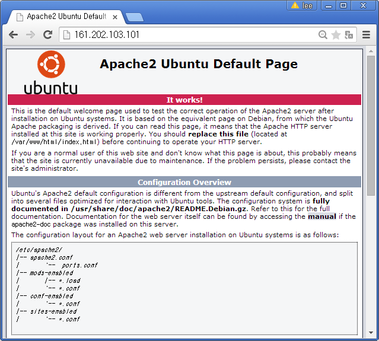
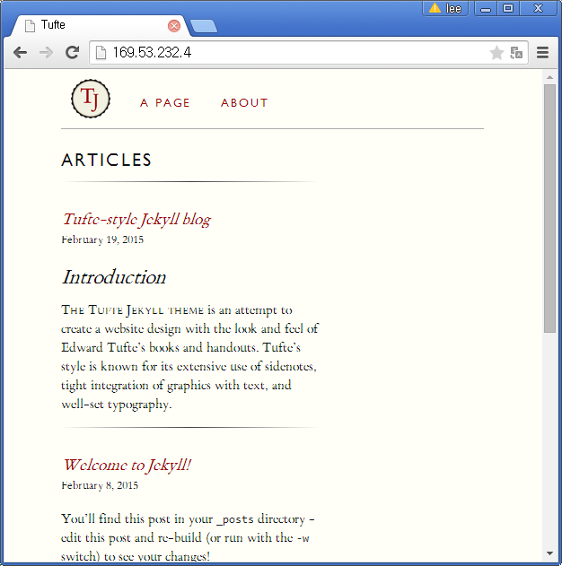
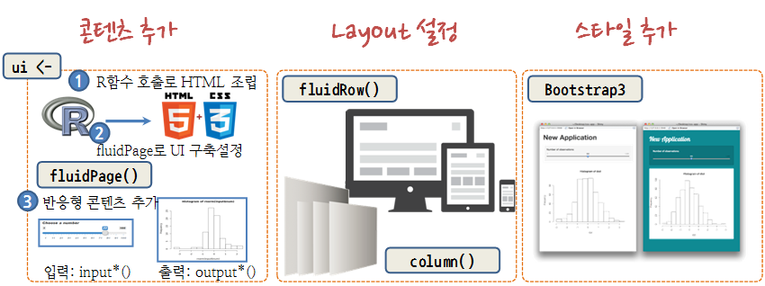

데이터 제품
Shiny 프론트엔트 개발
학습 목표
- 웹앱 개발을 위한 LAMP를 설치한다.
- 프론트엔드 Bootstrap, jQuery, Jekyll을 설치한다.
- 부츠트랩 3 CSS, fluidPage, 레이아웃을 Shiny에 맞게 개발한다.
1. 웹앱 개발을 위한 툴체인(Tool Chain) 설치
웹앱(Web App)은 웹브라우져가 설치된 클라이언트 컴퓨터에서 동작하는 응용프로그램이다. 통상 웹브라우저에 최적화된 웹(Web) 응용프로그램과 특정 플랫폼에 특화된 앱(App) 응용프로그램을 각각 개발하는 것이 바람직할 수 있지만, 웹과 특정 플랫폼 앱을 모두 학습하고 경험을 한 뒤에 응용프로그램을 개발하는 입장에서는 여간 시간과 노력이 많이 드는 것이 아니다.
이것에 비해서 클라이언트에 웹브라우져만 설치되어 있으면 어디서든 동작하게 되는 응용프로그램을 개발하는 것은 매력적이다. 이러한 유형의 응용프로그램을 개발하는데 최적화된 툴체인(Tool Chain)이 LAMP다.
2. LAMP 툴체인 설치
2.1. 웹서버 아파치(Apache) 설치
가장 먼저 아파치 웹서버를 설치한다. 웹서버는 웹브라우져 클라이언트에서 HTTP 요청을 받아들여, 주로 그림, 스타일 시트, 자바스크립트를 포함한 HTML 문서를 웹 페이지형태로 클라이언트로 전달하는 것이다.
root@dev:/# sudo apt-get update # 최신버젼 설치를 위한 준비
root@dev:/# sudo apt-get install apache2 # 아파치 웹서버 설치
root@dev:/# sudo apt-get install mysql-server # MySQL 데이터베이스 서버 설치, root 비밀번호 설정
root@dev:/# sudo apt-get install php5 libapache2-mod-php5 # PHP 설치 리눅스(우분투) 환경에서 웹서버, 데이터베이스, PHP를 설치했으면 이제 제대로 설치가 되었는지 확인해보자. 웹서버를 sudo /etc/init.d/apache2 restart 명령어로 재가동하고 ifconfig 명령어나 ifconfig eth1 | grep 'inet addr:' 을 통해서 ip 주소를 확인하고 웹브라우저에 주소창에 161.202.103.101을 입력해서 Apache2 Ubuntu Default Page가 보인다면 모든 준비는 완료된 것이다.
root@dev:/# sudo /etc/init.d/apache2 restart
root@dev:~# ifconfig eth1 | grep 'inet addr:'
inet addr:161.202.103.101 Bcast:161.202.103.127 Mask:255.255.255.224
3. 프론트엔드 앱개발
3.1. 프론트엔드 앱개발 툴체인 : Bootstrap
웹앱을 개발 하기 위한 프론트엔드 앱개발 도구는 Bootstrap과 jQuery다. Bootstrap을 설치하는 방법은 여러가지가 있다. 가장 간단한 방법 중 하나는 .zip파일을 다운로드 받아서 index.html 파일에 “Hello World!!!”를 찍는 것이다. zip 파일은 http://getbootstrap.com/getting-started/#download 사이트에서 원하는 것을 다운로드 받는다. *Download Bootstrap버튼 위에 마우스 우클릭하면링크주소 복사가 있어wget` 명령뒤에 인자로 붙여넣는다.
만약 unzip이 설치되어 있지 않다면 apt-get install unzip 명령어로 간단히 설치한 후 unzip 명령을 실행한다.
root@dev:~# wget https://github.com/twbs/bootstrap/releases/download/v3.3.4/bootstrap-3.3.4-dist.zip
root@dev:~# apt-get install unzip
root@dev:~# unzip bootstrap-3.3.4-dist.zip우분투에서 윈도우 탐색기와 유사한 나무구조를 명령라인 인터페이스에서 볼 수 있는 명령어가 tree다. apt-get install tree 명령어로 설치하고, Bootstrap 설치를 완료했다면 css, fonts, js 폴더 아래 14개 파일이 들어 있는 것을 확인할 수 있다.
root@dev:~/bootstrap-3.3.4-dist# apt-get install tree
root@dev:~/bootstrap-3.3.4-dist# tree
.
|-- css
| |-- bootstrap.css
| |-- bootstrap.css.map
| |-- bootstrap.min.css
| |-- bootstrap-theme.css
| |-- bootstrap-theme.css.map
| `-- bootstrap-theme.min.css
|-- fonts
| |-- glyphicons-halflings-regular.eot
| |-- glyphicons-halflings-regular.svg
| |-- glyphicons-halflings-regular.ttf
| |-- glyphicons-halflings-regular.woff
| `-- glyphicons-halflings-regular.woff2
`-- js
|-- bootstrap.js
|-- bootstrap.min.js
`-- npm.js
3 directories, 14 filesBootstrap 설치가 완료되었으면 “Hello World”를 만들어 보자. 먼저 Bootstrap 이 적용되지 않은 index.html 웹페이지 코드를 HTML로 작성한다.
<!--index.html-->
<!DOCTYPE html>
<html>
<head>
<meta charset="utf-8">
<title>Bootstrap 없는 HTML</title>
<meta name="viewport" content="width=device-width, initial-scale=1">
</head>
<body>
<h1>여러분 안녕하세요... Hello, world!</h1>
</body>
</html><!--index-bs.html-->
<!DOCTYPE html>
<html>
<head>
<meta charset="utf-8">
<title>Bootstrap 없는 HTML</title>
<meta name="viewport" content="width=device-width, initial-scale=1">
<link rel="stylesheet" type="text/css" href="css/bootstrap.min.css">
</head>
<body>
<h1>여러분 안녕하세요... Hello, world!</h1>
<script src="https://code.jquery.com/jquery-1.11.2.min.js"></script>
<script src="js/bootstrap.min.js"></script>
</body>
</html>Bootstrap 없는 index.html 파일과 Bootstrap을 적용한 index-bs.html 파일을 /var/www/html 클라우드 웹서버 배포 위치로 이동한다. 최종 결과는 다음과 같다. index.html, index-bs.html 파일 두개만 추가되었다.
root@dev:/var/www/html# tree
.
|-- css
| |-- bootstrap.css
| |-- bootstrap.css.map
| |-- bootstrap.min.css
| |-- bootstrap-theme.css
| |-- bootstrap-theme.css.map
| `-- bootstrap-theme.min.css
|-- fonts
| |-- glyphicons-halflings-regular.eot
| |-- glyphicons-halflings-regular.svg
| |-- glyphicons-halflings-regular.ttf
| |-- glyphicons-halflings-regular.woff
| `-- glyphicons-halflings-regular.woff2
|-- index-bs.html
|-- index.html
`-- js
|-- bootstrap.js
|-- bootstrap.min.js
`-- npm.js
3 directories, 16 files
3.2. 프론트엔드 앱개발 툴체인 : jQuery
jQuery는 사이트 접속해서 Download jQuery를 클릭하면 jQuery 다운로드 사이트로 접속해서 원하는 버젼을 다운로드 받아 사용하면 된다. wget http://code.jquery.com/jquery-2.1.4.min.js 명령어로 다운로드받아서 js 디렉토리에 담아 두면 된다.
root@dev:/var/www/html/js# wget http://code.jquery.com/jquery-2.1.4.min.jsindex.html 파일에서 jQuery를 찾는 곳이 외부 인터넷 https://code.jquery.com/jquery-1.11.2.min.js 주소에서 로컬에 다운로드 받은 디렉토리로 변경하면 된다. 기존 1.11.2 버젼에서 2.1.4 버젼으로 변경했다.
<!--index-js.html-->
<!DOCTYPE html>
<html>
<head>
<meta charset="utf-8">
<title>Bootstrap 없는 HTML</title>
<meta name="viewport" content="width=device-width, initial-scale=1">
<link rel="stylesheet" type="text/css" href="css/bootstrap.min.css">
</head>
<body>
<h1>여러분 안녕하세요... Hello, world!</h1>
<script src="js/jquery-2.1.4.min.js"></script>
<script src="js/bootstrap.min.js"></script>
</body>
</html>3.3. 프론트엔드 앱개발 툴체인 : Jekyll
우분투에서 Jekyll을 설치할 때 난관이 많다. 특히 Jekyll이 Ruby기반이라 특히 그렇다. 우분투에서 Jekyll 정적 웹페이지(Static Webpage)를 구축하는 방법은 다음과 같다.
3.3.1. 구 루비 버젼 확인 및 삭제
# 루비 버젼확인 및 설치된 오래된 루비 버젼 삭제
root@jekyll:~# ruby -v
ruby 1.8.7 (2011-06-30 patchlevel 352) [x86_64-linux]
root@jekyll:~# sudo apt-get purge ruby* 3.3.2. RVM 기반 루비 최신 버젼 설치
RVM(Ruby Version Management)은 루비버젼관리 소프트웨어다. RVM 잘못된 버젼으로 작업을 하면 우분투 환경에서 엄청난 오류와 싸워야 된다. 먼저 ruby-rvm을 제거하고 깔끔한 상태로 시작한다. 자세한 사항은 우분투 루비 설치원문을 참조한다.
root@jekyll:~# sudo apt-get --purge remove ruby-rvm
root@jekyll:~# sudo rm -rf /usr/share/ruby-rvm /etc/rvmrc /etc/profile.d/rvm.sh새 터미널 윈도우를 열어서 다음 명령어를 날렸을 때 아무것도 없다면 이제 준비가 완료된 것이다. 만약 뭔가 출력결과가 있다면, 컴퓨터를 다시 부팅하자.
root@jekyll:~# env | grep rvm다음 명령어를 통해서 RVM을 설치한다.
root@jekyll:~# \curl -L https://get.rvm.io |
bash -s stable --ruby --autolibs=enable --auto-dotfiles
root@jekyll:~# ruby -v
ruby 2.2.1p85 (2015-02-26 revision 49769) [x86_64-linux]3.3.3. Jekyll 설치
먼길을 돌아 이제야 Jelyll을 설치할 수 있다.Jekyll은 루비 언어로 만들어졌으며 단순(Simple)하고, 정적(Static)이며, 블로그 친화적이다. 이와 같은 아름다운 장점으로 인해서 루비를 다시 설치하는 고난의 길을 걸어왔다. 다음은 허무하게도 매우 단순하다.
GitHub이 워드프레스와 견줄만한 블로그 서비스를 제공하고 있어서 gem install github-pages 명령어를 날리면 모든 설치가 완료된다. jekyll serve 명령어로 정상적으로 실행이 되는지 확인한다.
root@jekyll:~# gem install github-pagesroot@jekyll:~# jekyll serve
Configuration file: none
Source: /root
Destination: /root/_site
Generating...
done.
Auto-regeneration: enabled for '/root'
Configuration file: none
Server address: http://0.0.0.0:4000/
Server running... press ctrl-c to stop.3.3.4. Jekyll 테마 및 정적웹 블로그 서비스 개발
Jekyll을 설치한 다음 Jekyll 테마 사이트에서 원하는 테마를 얻어 다운로드하고 jekyll serve 혹은 jekyll -t build -d _site 명령어를 보내면 _site 디렉토리에 정적웹 블로그 서비스가 자동 생성된다.
gem install rouge는 다운로드 받은 Jekyll 테마, tufte-jekyll에 의존성이 있어 미리 설치한 것이다. 압축파일을 풀고 테마 디렉토리로 이동해서 jekyll serve를 실행하면 정적 웹페이지를 자동으로 _site에 생성해 준다. _site의 index.html 파일을 포함한 모든 파일을 웹서버 서비스 저장소로 옮겨 놓으면 서비스 준비가 완료된다.
root@jekyll:~# gem install rouge
root@jekyll:~# wget https://github.com/clayh53/tufte-jekyll/archive/master.zip
root@jekyll:~# unzip master.zip
master.zip tufte-jekyll-master
root@jekyll:~# cd tufte-jekyll-master/
root@jekyll:~/tufte-jekyll-master# jekyll serveConfiguration file: /root/tufte-jekyll-master/_config.yml
Source: /root/tufte-jekyll-master
Destination: /root/tufte-jekyll-master/_site
Generating...
done.
Auto-regeneration: enabled for '/root/tufte-jekyll-master'
Configuration file: /root/tufte-jekyll-master/_config.yml
Server address: http://0.0.0.0:4000
Server running... press ctrl-c to stop.
^Croot@jekyll:~/tufte-jekyll-master# ls
about _example-config.yml LICENSE Rakefile
assets feed.xml page README.md
_config.yml fonts _page.txt _scss
css _includes _plugins _site
_data index.html _posts UploadToGithub.Rakefile
_drafts _layouts _post.txt
4. Shiny 프론트엔드 개발
Shiny 웹응용프로그램 개발을 위한 프론트엔드 구성요소는 정적-동적 콘텐츠 추가, 레이아웃 설정, 그리고 뷰츠트랩 스타일 요소 추가가 된다.

4.1. ui <- 정적 콘텐츠 추가
fluidPage() 함수에 HTML 태그를 넣거나 Shiny tag$ 태그를 넣어 동일하게 콘텐츠를 넣을 수도 있고, HTML()을 사용해서 전체를 넣어도 좋다. 좀더 자세한 사용은 Build your entire UI with HTML을 참조한다.
fluidPage( | fluidPage(
<h1>My Shiny App</h1> | tags$h1("My Shiny App"),
<p style="font-family:Impact"> | tags$p(style = "font-family:Impact",
See other apps in the | "See other apps in the",
<a href="http://www.rstudio.com/ | tags$a("Shiny Showcase",
products/shiny/shiny-user- | href = "http://www.rstudio.com/
showcase/">Shiny Showcase</a> | products/shiny/shiny-user-showcase/")
</p> | )
) | ) fluidPage(
HTML(
'<div class="container-fluid">
<h1>My Shiny App</h1>
<p style="font-family:Impact">
See other apps in the
<a href="http://www.rstudio.com/
products/shiny/shiny-user-
showcase/">Shiny Showcase</a>
</p>
</div>'
)
)4.2. 레이아웃(Layout) 추가
하나의 화면을 레이아웃을 조정해서 열(Column)의 경우 12열로 나누어서 6+6 으로 구분된 2개 부화면으로 혹은 2+5+5로 크기가 다른 3개 부화면으로 나누는 것도 가능하다. 열을 나눌 때는 column()을 사용하고 행을 여러 구역으로 나눌 때는 fluidRow()를 사용한다.
# 세로를 2개 행으로 구분 | # 행 내부에 두 열을 추가하고 오프셋을 설정
ui <- fluidPage( | ui <- fluidPage(
fluidRow(), | fluidRow(
fluidRow() | column(3),
) | column(5)),
| fluidRow(
| column(4, offset = 8)
| ) 4.3. 패널(Panel) 추가
패널을 추가해서 연관 요소 콘텐츠를 하나의 그룹을 묶어 심미적, 혹은 기능적으로 통일성을 준다.
tabPanel(), tabsetPanel(), navlistPanel() 패널을 사용한다.
wellPanel을 사용해서 입력값을 통일해서 기능적, 심지적인 일체감을 준다.
library(shiny)
ui <- fluidPage(
wellPanel(
sliderInput(inputId = "num",
label = "Choose a number",
value = 25, min = 1, max = 100),
textInput(inputId = "title",
label = "Write a title",
value = "Histogram of Random Normal Values")
),
plotOutput("hist")
)
server <- function(input, output) {
output$hist <- renderPlot({
hist(rnorm(input$num), main = input$title)
})
}
shinyApp(ui = ui, server = server)레이아웃에 대한 자세한 사항은 Application layout guide를 참조한다.
4.4. CSS 스타일 추가
- 외부 CSS 파일에 연결
.css파일을 www 폴더 내부에 위치시킨다.theme인자로 해당*.css파일을 지정한다.- 혹은
tags$head(),tags$link()와 연결한다.
ui <- fluidPage( | ui <- fluidPage(
theme = "bootswatch-cerulean.css", | tags$head(
sidebarLayout( | tags$link(
sidebarPanel(), | rel = "stylesheet",
mainPanel() | type = "text/css",
) | href = "file.css"
) | )
| )
| ) - 헤더(header)에 전역 CSS를 작성한다.
- 전역 CSS (global CSS)를 tags\(head(), tags\)style(), HTML()으로 작성한다.
- 혹은
includeCSS()를 사용해서 파일로 CSS를 저장한다.
ui <- fluidPage( | ui <- fluidPage(
tags$head( | includeCSS("file.css")
tags$style(HTML(" | )
p { |
color:red; |
} |
")) |
) |
) |- 개별 CSS를 태그 스타일 속성에 맞춰 작성한다.
- Shiny 태그 함수에 스타일 인자를 설정한다.
ui <- fluidPage(
tags$h1("Title", style = "color:red;")
)Shiny 스타일 추가에 대한 자세한 사항은 Style your apps with CSS을 참고한다.